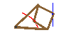

Circles
Eye Ball
Three circles

Application of Alternate Segment Theorem
Peaucellier Apparatus
Inner Center
Inscribed Quadrilateral
Common Tangents
Two Regular Triangle and Locus
Problem of Maximum Angle(1)
Problem of Maximum Angle(2)
Problem of Two Circles(1)
Problem of Two Circles(2)
Problem of Two Circles(3)
Problem of Two Circles(4)
Ruler
Simson's Law
root x
Salinon(Salt-cellar)
Inscribed Angles
Quoits
Angles standing on the same arc
A Flashlight
Circumcenter
Information of Products